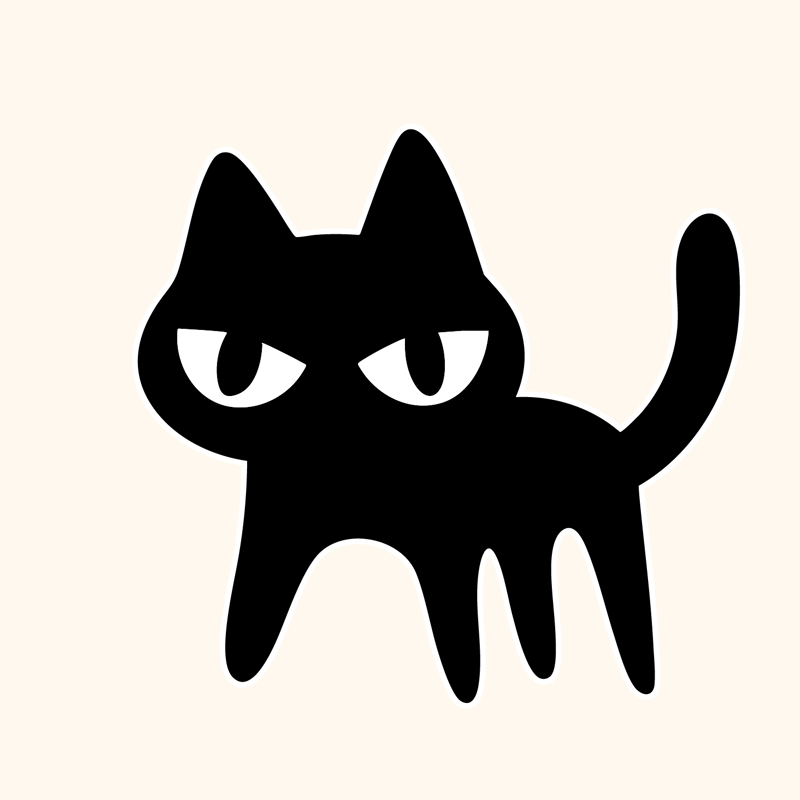

ねこ質チャンネル
おっさんが、社会をより良く変えるために。
ねこ質チャンネルは、リーダーシップの開発と成長の機会を届ける「おっさん教育ラジオ」です。
4人の息子を育てながら会社を経営する「うどん」が、AIとの自由研究をもとに、独自の視点で解説します。
大阪の街の歴史など、記録で確かめられたことを、出典と一緒にお届けします。
「ねこ質チャンネル アップロード」について
「ねこ質チャンネル アップロード」は、このチャンネルの運営者が、自分のチャンネルに自分の動画をアップロードし、タイトル・説明文・公開日時などを設定するためだけに使う、個人用のツールです。YouTube API Services を利用しています。一般の方に提供するサービスではありません。
English: "Nekoshitsu Channel Upload" is a private tool used only by the owner of the Nekoshitsu Channel to upload the owner's own videos to the owner's own YouTube channel and to set their titles, descriptions and publishing schedules. It uses the YouTube API Services and is not offered to anyone else.
お問い合わせ：neko.shitsu@gmail.com